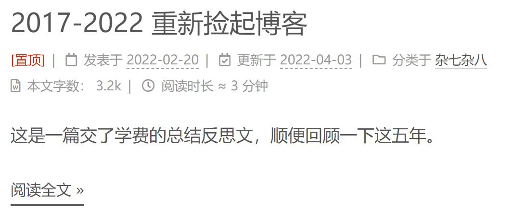

2017-2022 重新捡起博客
这是一篇交了学费的总结反思文，顺便回顾一下这五年。
作为一名程序员，一个存放自己知识和笔记的地方实在太重要了。最早自己搭建博客，后来因为总是随手记一些零零碎碎的知识点，对自己的博客有质量洁癖却没时间完整的总结成一个满意的系列，导致草稿箱里堆了很多，更新到网页上去的却很少。最后干脆放弃转而使用在线云笔记，从印象笔记换到为知笔记又用到语雀。几年下来笔记记了不少，但是大部分都很乱。想系统的回顾整理一下都无从下手。再加上因为工作了之后，公司限制员工使用在线笔记，总是被迫转移阵地。越来越觉得，写博客还是很重要的。
第一次搭建自己的博客是在2017年，当时买了云服务器和域名并使用hexo搭建的。过了一年之后域名失效，转而使用github page来托管。后来在转向使用在线云笔记的时候，服务器就放在那里吃灰了。某天忘记续费直接被回收，hexo仓库丢失无法更新，于是博客也彻底的被我弃用了，但既有博客还能继续访问。不巧的是前段时间心血来潮给github改了用户名，结果导致博客彻底挂了。被迫走上交学费挽救之路。在这里记录一下苦逼的挽救过程。
找回github page
首先我第一个想到的是把github用户名改回去先挽救我的博客页面，但github直接禁止改回历史名，只能另外想办法。
其实这个问题也很简单，用户名变了，导致github的page的域名也跟着变了，然而仓库里的html使用的还是老域名。所以只要把这些html的域名批量修改了就好。过程：git clone -> sed 批量修改 -> git commit 然后push回去。再次打开，博客页面可以访问了~
根据html重新生成markdown
链接能访问后，博客的静态页面算是找回了，但是本身的markdown记录还是丢失的状态，因此需要重新生成一份。
- 方法一：利用工具将html文件转成markdown格式，在github上找到了一个好用的工具: turndown
- 方法二：利用语雀的格式识别和导出markdown的功能。
最终我用的是方法二，因为方法一的html页面上带有很多hexo的信息，转换后冗余信息太多，另外无法获取正确的图片和LaTeX公式。
重新搭建HEXO环境
之前搭的时候没有记录，好多步骤都忘了，现在重走一遍过程顺便保存一下搭建记录，以后说不定还用得到=。=
安装nodejs
由于我是在个人电脑上使用了wsl，安装nodejs参考微软的官方文档
安装hexo并初始化博客
1 | npm install -g hexo-cli |
踩坑：需要关闭命令行梯子代理，否则会出现问题
以上步骤之后，会在http://localhost:4000/ 页面显示一个hello world的示例博客页
主题配置
默认的主题不好看，之前用的Next-mist主题，按照以下步骤配置：
npm install hexo-theme-next- 在
__config.yml文件里修改theme: next - 配置mist模式：在next的
__config.yml里修改scheme: Mist - 配置页面显示选项 (修改next的__config.yml）：
- 菜单选项：
menu，打开home/tag/archives字段 - 代码主题：
codeblock的字段，选择atom-one-dark主题 - 配置搜索博客的功能：参考local search文档
- 侧栏设置：
position: right - 头像设置：替换
/images/avatar.gif，修改avatar字段 - github设置：
github_banner, enable设为true - 网站logo设置：修改favicon的small和medium为自己的logo：
/images/logo.ico - 字数显示和阅读时长：在config.yml中搜索
wordcount，然后按照文档修改
- 菜单选项：
站点信息配置
整体信息配置：修改__config.yml的以下字段：
1
2
3
4
5
6
7title: chenchu.zs's blog
subtitle: '仓鼠君的瓜子库'
description: '积跬步以致千里'
keywords:
author: Zhang Shu
language: zh-CN
timezone: ''配置标签和分类页面.
1
2hexo new page tags
hexo new page categories然后切换到对应的目录，编辑
index.md。
示例，分类页面，切换目录到source/categories：1
2
3
4
5
6
7---
title: categories
date: 2022-02-27 13:06:46
type: categories
---
杂七杂八
算法与刷题TODO：配置自己的首页
博客文章迁移
在hexo中添加博客
新建博客的命令如下：会在source/_post目录下生成一个相关的markdown文件。将之前所有的博客都用这种方式重新创建一遍
1 | hexo new '<post_title>' |
博文基本样式配置
博文的markdown文件中需要做一些修改才可以展示一些前端的信息，详细见文档：https://hexo.io/docs/front-matter。基本配置如下：
显示文档标题、日期、tag、分类等信息。在md文件最开始添加以下配置：
1
2
3
4
5---
title: <post_title>
date: 2022-02-20 13:21:52
tags:
---配置显示博客阅读全文：在文章中任意位置添加
<!-- more -->博客置顶
1
2npm uninstall hexo-generator-index --save
npm install hexo-generator-index-pin-top --save然后在文章的
front-matter中设置top: true。这样文章就会置顶显示了，不过没有任何置顶标识，如果需要配置样式还需要修改如下：找到/themes/next/layout/_macro/里关于post的文件，在<div class="post-meta">的开始插入以下代码：1
2
3
4{%- if post.top %}
<font color=D81E06>[置顶] </font>
<span class="post-meta-divider"></span>
{%- endif %}效果展示如下：

图片正确展示
参考文档https://hexo.io/zh-cn/docs/asset-folders.html
- 设置
post_asset_folder: true，开启后hexo new <page>会在md的目录生成一个该博客的同名目录。将对应博客的资源放到这个路径中。 - markdown文件会出现hexo generate时候图片路径显示不正确的问题，注意文档中的这个例子，在写路径的时候要忽略资源文件夹的名称。
eg：
image.jpgis located at/2020/01/02/foo/image.jpg, meaning it is an asset image of/2020/01/02/foo/post,will be rendered as<img src="/2020/01/02/foo/image.jpg">.
公式正确展示
网上有好多教程，但是我实际操作下来并没有那么麻烦，无需卸载和重装什么东西，只需要在next/_config.yml里找到math参数，把every_page设为true, 选择渲染引擎为mathjax即可。
博客部署
生成静态页面并部署
命令如下：
1 | hexo generate |
部署到git page
首先安装git部署插件:
1 | npm install hexo-deployer-git --save |
修改_config.yml的deploy字段（文件的注释中有相应的教程文档），我的配置如下：
1 | deploy: |
修改完之后执行以下命令
1 | hexo clean |
gitee page镜像
github的站点在美国，经常出现访问速度过慢或者网页打不开的情况，所以可以使用国内的git平台来加快启动。
曾经我直接把git指定为gitee的仓库并启用了gitee page，但是gitee的page服务不能自动更新，最终又切回到github了。
这里要说一下，之前的博客我用的是github page，但是由于github访问太慢，时不时抽风404，最终决定切换到国内的gitee，国产平台真香，新建仓库时可以使用各种模板，还能创建免费的私有库，非常好用啊~
五年回顾
2017年5月，我拿到了第一个实习offer。
企业的环境比起学校来说，对能力的锻炼是飞速的。在第一家实习公司我学到了如何快速的完成工业项目的需求。在第二家实习公司我学到了开源项目的协同合作开发和测试流程。在第三家实习公司培我逐渐培养起了解决问题的方法论，以及学到了一点怎么去做一些探索性的东西的思路。
而从毕业到现在，我也在这第三家公司待了两年多了。在第一份实习里，带我的mentor是一个工作两年的师兄，一个非常靠谱的人。如今我也是个毕业两年多的人了，也开始带新人了，有时候恍惚回想起五年前，一边感激当年的前辈，一边也会想着怎么能像当前师兄带我一样去帮助新人成长。
五年带给人的变化不止是从新人变成熟练工这么简单，我从最早的C++后端，到高性能计算以及现在的AI infra方向，不知不觉方向也经历了很大的变动。到今天这个时间节点，AI infra已经是一个从业者众多，卷成红海一样的方向了。很多大公司都试图提出自己的解决方案，这导致这个方向的技术，非常的碎片化。
有时候我也会觉得迷茫和心累，并不知道这是否是个可持续的方向。也会想象一下，再过五年我会做哪个领域的东西呢？五年时间深度学习技术经历了翻天覆地的变化，从CV到NLP，新的方案不停被推出。或许再过五年，现在我非常熟悉和擅长的东西也已经过时了。
时代滚滚向前，不努力更新知识就会被甩下去，如今我能做的也只有保持持续学习和知识记录这一条路了。
仅以此文置顶，激励自己坚持更新博客和自己的知识体系。